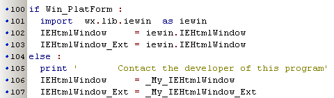

Html / pdf / ... Viewer ( november 2008 )
Application Designer / Domain Expert / Control Designer / Core Developer
Introduction
Making a general viewer, that can view several standard documents, like web-pages / local html-files / pdf-files / chm-files, is very easy under Windows, but almost impossible under other Operating Systems. Besides that we want to view full blown html-pages (that can't be viewed with wx.html.HtmlWindow) and we want to view html pages with widgets (which can only be viewed with wx.html.HtmlWindow).
The problem might be largely solved, as soon as webkit is integrated in wxPython (at this moment I read that there are already alpha versions available).
The basic solution chosen at this moment is, we place both a wx.html.HtmlWindow and a activeX-IE component together on one panel. Make them both full blown, and use one of the two, depending on the contents, while making the other invisible. For non-Windows OS, we try to display as much as possible on wx.html.HtmlWindow, and everything that doesn't fit, will be sent to the default browser. For non-Windows OS, we could improve the behavior by adding more (external) controls for other document types, like pdf-files and chm-files.
Top Level: URL_Viewer
At the top level, we have a viewer with navigation buttons, that can display a whole range of files: html (+ frames, +CSS), html-widgets, websites, pdf, MS-office-documents, pdf, ... at least this yields for the Windows Operating System. When used in another OS, it will use the default browser for files that can't be displayed with wx.html.HtmlWindow. So in that case the capabilities of the default browser will determine if a document can be viewed or not. The combobox keeps track of the history and is automatically saved and restored.
Low Level
At the low level, we've for all OS's two different viewers available, which on Windows both points to iewin.IEHtmlWindow, but for other OS's points either to the internal viewer or to the external default browser.

By always using IEHtmlWindow or IEHtmlWindow_Ext, we can make the program OS independent.